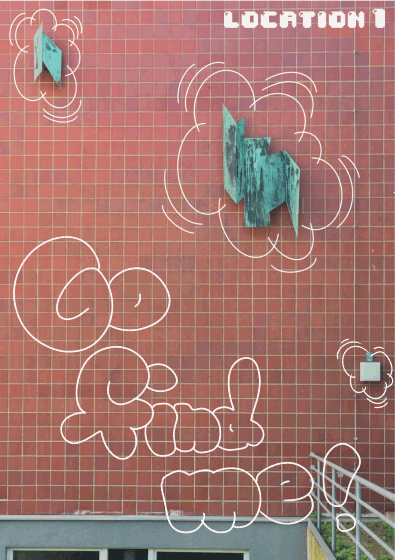

Do you want to take a break and don‘t know where?
Then you are at the right place!
Explore the campus @designtransfer and discover the vibrant place with beautiful architecture filled with students from all around the world.
This Guide Tour wants you to get out from the seemingly never ending Home-Office/Online School Life and introduces you to different spots on campus.
In the End this Guide Tour will lead you to the hidden Spot, where you can just sit down and enjoy the view keeping your mind off from daily work life.
Just follow the Instructions down below:
Guide Tour to Location One:
step 1 look out for a red building
(clue: Jazz-Institut Berlin)
step 2 walk towards the red building
step 3 go up to the wall
step 4 search the next QR Code
step 5 scan QR Code
